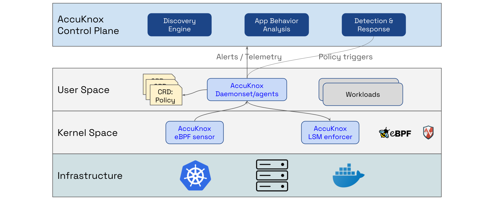
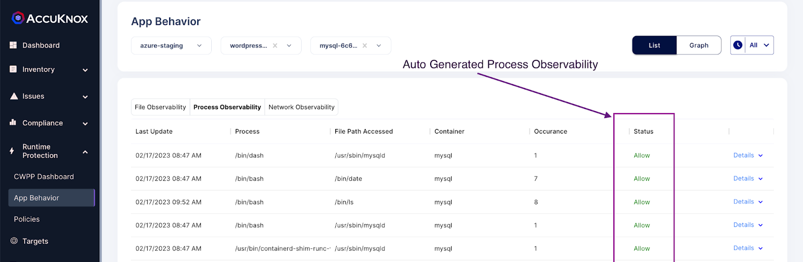
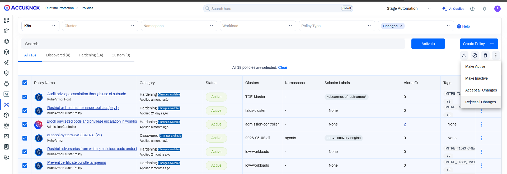
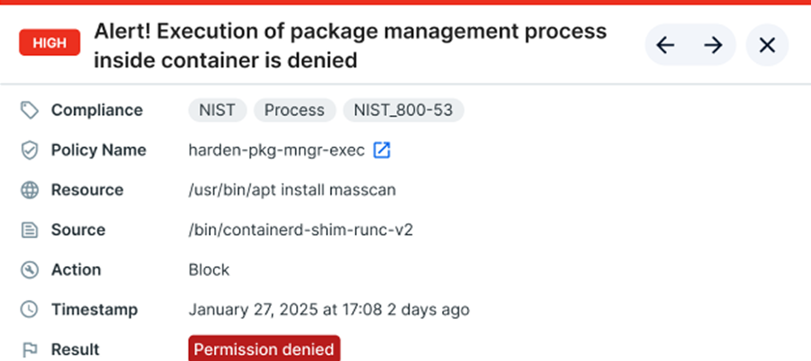
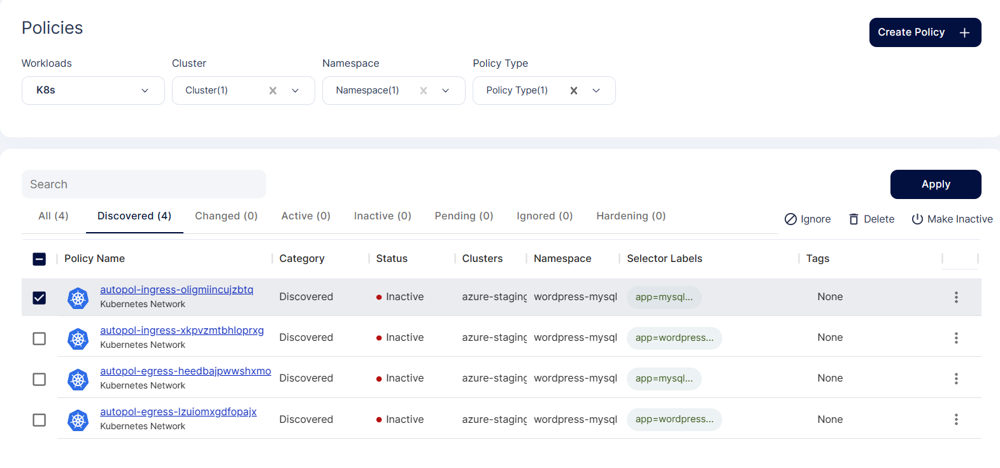
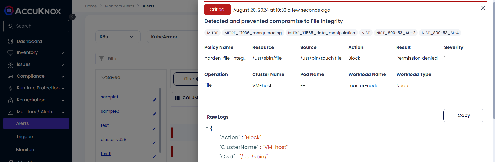
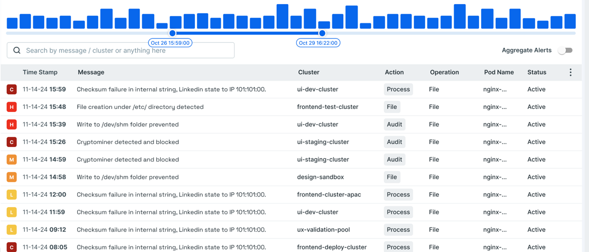

CWPP best practices cheat sheet
Stop the attack
inside the
workload
Six runtime security practices for containers, Kubernetes and VMs, from the first baseline to Zero Trust enforcement in the kernel.
Six runtime security practices for containers, Kubernetes and VMs, from the first baseline to Zero Trust enforcement in the kernel.
Attackers automate every step from finding a weak workload to running code inside it. A tool that kills a process after the alert sees the miner, the shell or the data theft after it already ran.
Average time from reconnaissance to a completed cloud attack.
Share of organizations that had a runtime incident in the last 12 months.
Cloud bill a cryptojacking victim pays for every $1 the attacker mines.
Sources. Dwell time from the Mandiant 2025 annual threat report, cloud.google.com. Container lifespan from the Sysdig 2025 Cloud Native Security and Usage Report, sysdig.com.
AccuKnox runs an eBPF sensor and an LSM enforcer on every node, through the open source KubeArmor. The six practices follow the Runtime Security Journey: learn, harden, enforce, then keep the evidence.

Runtime security architecture. help.accuknox.com/getting-started/runtime-sec-arch
The Discovery Engine records every process, file and network call per container, then writes that behavior as a policy you review.

App Behavior, process observability. help.accuknox.com/use-cases/app-behavior/
Discovery never stops, so the golden baseline keeps tracking real behavior for every container. Read the App Behavior guide
KubeArmor ships hardening policies that map to CIS, MITRE ATT&CK, NIST, PCI DSS and STIG controls.

Runtime Protection policies with hardening tags. help.accuknox.com/use-cases/app-hardening/
Pick a cluster and namespace in Runtime Protection, select the hardening policies, then apply and approve them. Browse the hardening policies
KubeArmor enforces through LSMs such as AppArmor and BPF LSM, so a denied process never starts.

A blocked package manager run, result Permission denied. help.accuknox.com/use-cases/zero-trust/
Enforcement runs on each node with no sidecar and no inline proxy, and keeps working if the control plane is unreachable. Read the Zero Trust guide
Every pod can reach every other pod by default. A network policy limits each pod to the flows it needs.

Discovered network policies for a sample app. help.accuknox.com/use-cases/network-segmentation/
AccuKnox segments at the pod level and moves each policy from Pending to Active after approval. Read the segmentation guide
Of 50 compromised GCP instances, 86% ran cryptocurrency miners. A miner must download, write and run a binary, so block each step.

A blocked write to a system folder. help.accuknox.com/use-cases/vm-file-integrity/ Miner data from Google Cloud Threat Horizons, November 2021, services.google.com
In the documented test the miner exits with status 126, and the alert shows Permission denied. Read the cryptojacking guide
60% of containers live for 60 seconds or less. Capture process, file, network and syscall events before the pod is gone.

Runtime alerts timeline. help.accuknox.com/use-cases/forensics/ Lifespan data from Sysdig, 2025, sysdig.com
Each alert records the cluster, pod, container, image, process, parent process, enforcer and result. Read the forensics guide
Read each row. Where the gap is true for you, take the first step this week.
| If this is true | AccuKnox capability | First step |
|---|---|---|
| Nobody can list what each container runs, reads and connects to | App Behavior and Discovery Engine | Onboard one cluster and review App Behavior for one namespace |
| Production pods can run apt, curl downloads or binaries from /tmp/ | Hardening policies | Apply the package manager and /tmp/ noexec policies in AUDIT |
| Your runtime tool kills processes after an alert | KubeArmor inline enforcement | Move one STABLE policy from AUDIT to BLOCK |
| Any pod can reach any other pod | Network segmentation | Review and approve the discovered network policies for one app |
| A miner shows up only as a cloud bill or an OOMKilled pod | Cryptojacking and FIM policies | Apply the miner policy and make system binary folders read only |
| Evidence of an incident leaves with the pod | Forensics and alert forwarding | Audit sensitive files and forward alerts to your SIEM |
Bring your gap check to a demo. An AccuKnox engineer will show discovery, hardening and BLOCK mode on a live workload.
Book a demo Open the CWPP docsKuppingerCole 2026 CNAPP Leadership Compass highlights the AccuKnox eBPF based runtime enforcement.
Analyst Andrew Green placed AccuKnox in the Runtime Environment group for kernel level enforcement.
KubeArmor, created by AccuKnox, performs inline mitigation against zero day attacks.